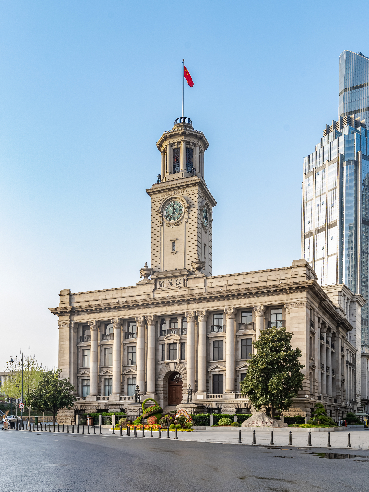
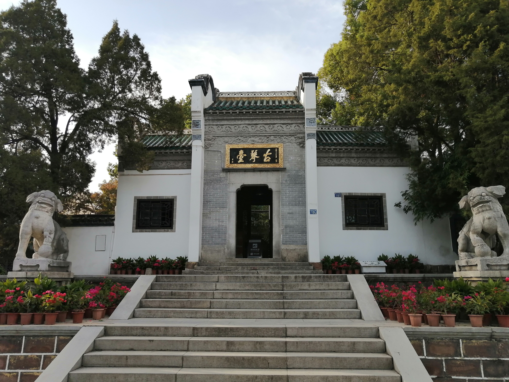
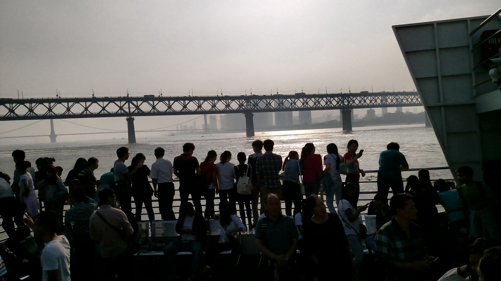
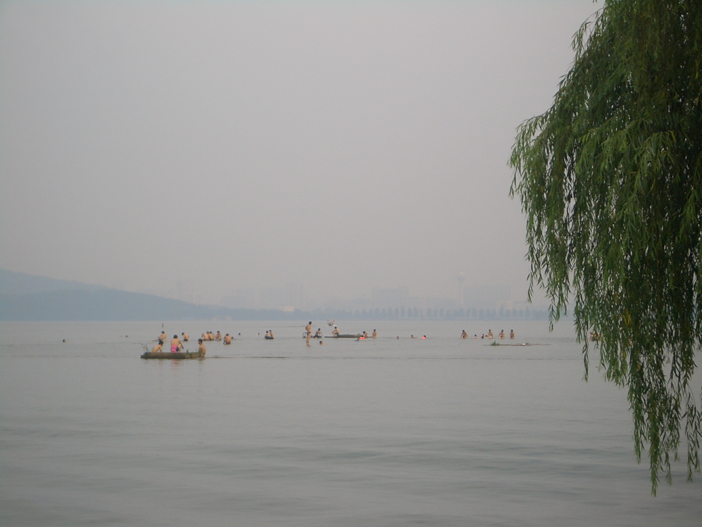
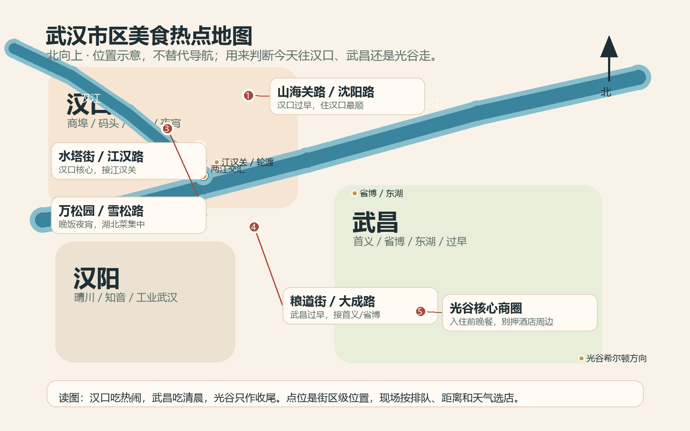

商埠和码头汉口
江汉关、黎黄陂路、轮渡、万松园。老租界、江边和夜宵都在这一片。
来武汉，可以先认三镇：汉口看商埠和码头，武昌看省城和文脉，汉阳看两江和工业。早饭、轮渡、老街、东湖和手信，按片区慢慢放进去。

长江从城中穿过，汉江在南岸嘴汇入长江。两条江把武汉切成汉口、汉阳、武昌。三镇离得近，来历和气质却不一样。资料武汉市地方志编纂办公室《武汉概貌》提到，武汉三镇格局与长江、汉江交汇密切相关。
查看地方志原文

武汉很大，第一次看容易散。按汉口、武昌、汉阳分开，路就清楚了。
江汉关、黎黄陂路、轮渡、万松园。老租界、江边和夜宵都在这一片。
粮道街、红楼、省博、东湖。早饭、博物馆、湖边傍晚可以放在同一天。
晴川阁、古琴台、归元寺、张之洞与武汉博物馆。看两江对望，也看一点工业史。
每一镇挑一条主线：从哪里来，看什么建筑，怎么走最省事。
汉口从船、货、钱庄、洋行、街市和夜生活里长起来。江汉关一带的近代建筑，连着开埠、海关和内陆贸易史。
看汉口开埠、海关和对外贸易。傍晚可以从这里接轮渡。
江汉路之外，黎黄陂路和巴公房子更能看出老汉口的街巷肌理。
说明汉口的繁荣不仅是老楼，还有货物、码头、仓储与加工。
黎黄陂路 → 同兴里/泰兴里 → 巴公房子 → 江汉关 → 武汉关码头 → 普通轮渡 → 晚上万松园。
武昌有省城、学府、官署、寺观和革命现场。红楼、省博和东湖放在一起看，历史、文物和日常生活能接上。
适合补上武昌的近代政治史。当前参观须知以官网为准。
热天最值得去的室内文化点：曾侯乙编钟、越王勾践剑、楚国八百年。
中午少暴走，傍晚选听涛或一小段绿道。
粮道街/大成路过早 → 红楼或省博 → 咖啡馆或室内休息 → 东湖傍晚。

汉阳适合补上武汉的另一面：古琴台有知音故事，张之洞、汉阳铁厂和汉阳造连着近代工业。
从汉阳看长江和武昌。
伯牙子期的故事，是汉阳最古典的一层记忆。
看汉阳铁厂、汉阳造和武汉近代工业的脉络。
晴川阁 → 古琴台 → 归元寺 → 张之洞与武汉博物馆。时间短时，选其中两三个点即可。

早饭、轮渡、老街、夜宵、东湖傍晚，比单独跑景点更像武汉。


黎黄陂路、同兴里、巴公房子、平和打包厂和江汉关连在一起，能看出老汉口的街巷和商埠底色。

这里不排店名。只看街区：汉口、武昌、光谷，各有更顺手的早饭和晚饭位置。

汉口吃热闹，武昌吃清晨，光谷适合收尾。 先看当天在哪一片，再选附近街区。
在汉口江汉区，湖北菜、小龙虾、烧烤和夜宵都集中。江汉关、轮渡、江滩之后来这里，很顺。
热干面、豆皮、面窝、糊汤粉、蛋酒都能找到。早上看翻台和队伍，没必要为一家店绕远路。
在武昌老城，适合接红楼、省博或东湖。当天主要逛武昌，就把早餐放在这里。
光谷不是传统小吃主场，但商圈密集，适合东湖或高校线之后解决晚餐。
上午山海关路或水塔街过早；下午走黎黄陂路、江汉关、江滩；傍晚坐普通轮渡；晚上回万松园。
粮道街或大成路过早；白天选红楼、省博二选一；傍晚去东湖。热天别把中午排得太满。
第一次来，汉口一天，武昌一天。汉阳可以留半天，时间不够就下次。
适合第一天。先在山海关路、水塔街一带吃早饭，再走黎黄陂路、江汉关和江滩。傍晚坐一次普通轮渡，晚上去万松园或雪松路。
适合第二天。粮道街或大成路开场，白天选省博或首义片区，傍晚把时间留给东湖。
汉阳更适合慢慢补。时间紧时不用硬塞。喜欢两江对望、寺院和工业史，再单独留半天。
这段时间适合午饭、咖啡馆、酒店休息或室内展馆。傍晚再出门，体验会好很多。
手信不用买得很花。好带、好分、有武汉味，就够了。
分送选周黑鸭小包装和热干面礼盒；给长辈可以看传统糕点、湖北茶或藕粉。现场吃到的那一顿，往往比手信更有记忆点。
肉类熟食、液体类如要跨境或乘机，出发前再查最新携带规则。
图片和资料尽量保留来源。开放时间、轮渡班次、预约政策和食品携带规则会变，出发前再看一次官方页面。